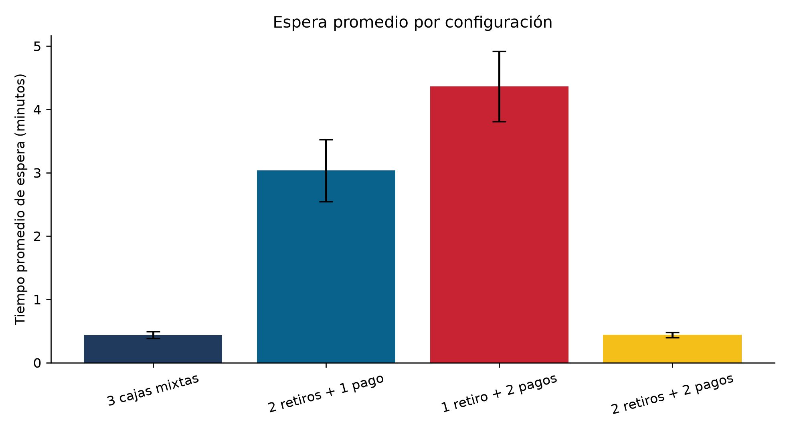
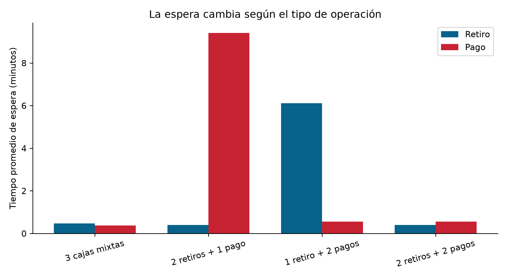
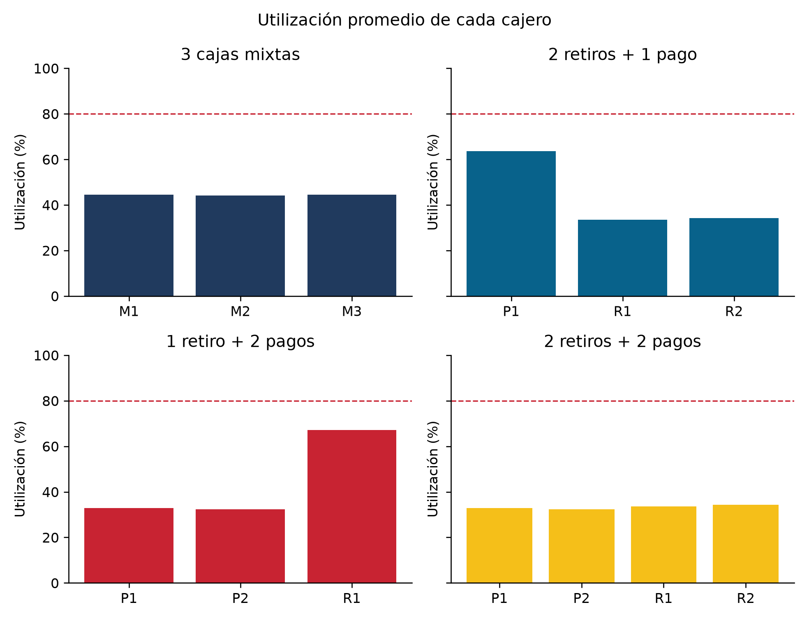

SIMULACIÓN DE ATENCIÓN BANCARIA Comparación de la distribución de tres cajeros para retiros y pagos
Actividad didáctica 2 · Módulo 3
Sara Colorado Gil
Ingeniería de Software y Datos · Asignatura: Simulación
Noviembre de 2026
1. Introducción
En esta actividad simulé la atención de una sucursal bancaria que tiene tres cajeros y recibe dos clases de operaciones: retiros y pagos. El banco necesita decidir si conviene asignar dos cajas para retiros y una para pagos, o realizar la distribución contraria. Aunque el 70 % de los usuarios hace retiros, los pagos requieren más tiempo de atención. Por eso la cantidad de clientes no es suficiente para tomar la decisión.
El objetivo fue comparar los tiempos de espera, la utilización de los cajeros y la cantidad de usuarios atendidos en diferentes configuraciones. También incluí un escenario con una cuarta caja para revisar si realmente hace falta aumentar la capacidad.
Pregunta central
¿Qué distribución de cajeros reduce mejor la espera sin concentrar toda la carga en una sola operación?
2. Metodología
Desarrollé una simulación de eventos discretos en Python. Cada réplica representa un día de 480 minutos. Para comparar los escenarios de manera justa, primero genero la demanda del día y luego atiendo exactamente a esos mismos clientes con cada configuración. Así evito que una alternativa parezca mejor solamente porque recibió menos personas o tiempos de servicio más cortos.
| Operación | Usuario | Servicio medio | Llegada media | Probabilidad dentro de la operación |
|---|---|---|---|---|
| Retiro | Rápido | 1 min | 1 min | 23 % |
| Retiro | Normal | 2 min | 2 min | 40 % |
| Retiro | Lento | 3 min | 3 min | 17 % |
| Retiro | Muy lento | 4 min | 3 min | 20 % |
| Pago | Rápido | 3 min | 1 min | 10 % |
| Pago | Normal | 3 min | 2 min | 20 % |
| Pago | Lento | 5 min | 3 min | 30 % |
| Pago | Muy lento | 7 min | 4 min | 40 % |
Supuestos utilizados
- Las llegadas y los servicios se generan con distribuciones exponenciales usando las medias suministradas.
- Cada cajero atiende una fila FIFO. Cuando hay dos cajas compatibles, el usuario elige la que pueda comenzar a atenderlo primero.
- Los cajeros tienen la misma velocidad. Las diferencias entre ellos aparecen por el tipo de clientes que reciben.
- A los 480 minutos dejan de llegar usuarios, pero se termina de atender a quienes ya habían llegado.
3. Resultados
En las cien réplicas llegaron en promedio 200,92 usuarios por día. Todas las configuraciones recibieron esa misma demanda. La comparación muestra que especializar las cajas produce un desequilibrio: la operación que queda con un solo cajero acumula la mayor espera.
| Configuración | Espera media | P95 de espera | Utilización máxima | Tiempo extra al cierre |
|---|---|---|---|---|
| 3 cajas mixtas | 0,44 min | 2,98 min | 47,6 % | 6,12 min |
| 2 retiros + 1 pago | 3,03 min | 19,66 min | 63,7 % | 14,07 min |
| 1 retiro + 2 pagos | 4,36 min | 17,85 min | 67,1 % | 9,56 min |
| 2 retiros + 2 pagos | 0,44 min | 2,96 min | 38,8 % | 6,17 min |

La operación con una sola caja concentra la espera
Con dos cajas de retiro y una de pago, los retiros esperaron 0,40 minutos en promedio, mientras que los pagos esperaron 9,41 minutos. Con la distribución contraria, los pagos bajaron a 0,55 minutos y los retiros subieron a 6,11 minutos. Este resultado explica por qué no conviene decidir únicamente con el porcentaje 70/30.

Desempeño de los cajeros
En la configuración recomendada entre las dos alternativas obligatorias, el cajero R1 tuvo el menor tiempo medio de servicio, con 2,31 minutos, y P1 tuvo el mayor, con 5,32 minutos. Esto no significa que P1 trabaje peor: su fila contiene pagos, que según el enunciado son operaciones más largas.

Promedio de usuarios por tipo
| Operación | Rápido | Normal | Lento | Muy lento |
|---|---|---|---|---|
| Retiro | 32,50 | 56,74 | 24,31 | 27,40 |
| Pago | 6,47 | 12,17 | 17,63 | 23,70 |
Réplicas con la menor cantidad de usuarios
Interpreté “modelo con menor cantidad” como la réplica que presentó el menor conteo de cada tipo. No existe una sola réplica mínima para todos los grupos, porque cada combinación alcanzó su mínimo en un día diferente.
| Operación | Tipo | Menor cantidad | Réplica |
|---|---|---|---|
| Pago | Rápido | 0 | 37 |
| Pago | Normal | 2 | 35 |
| Pago | Lento | 6 | 96 |
| Pago | Muy lento | 11 | 72 |
| Retiro | Rápido | 19 | 44 |
| Retiro | Normal | 32 | 18 |
| Retiro | Lento | 13 | 77 |
| Retiro | Muy lento | 15 | 84 |
El archivo usuarios_por_replica.csv conserva los totales de cada uno de los cien días y minimos_usuarios.csv permite comprobar estos mínimos junto con sus semillas.
4. Conclusiones provisionales
Si el banco debe escoger solamente entre las dos distribuciones exclusivas, recomiendo dos cajas para retiros y una para pagos, porque obtuvo el menor tiempo promedio general: 3,03 minutos frente a 4,36 minutos. Sin embargo, esta alternativa deja a los usuarios de pagos con una espera media de 9,41 minutos. Por eso la recomendación debe incluir esa desventaja y no presentarse como una solución perfecta.
La principal enseñanza del ejercicio es que la demanda debe analizarse junto con el tiempo de servicio. Los retiros son más numerosos, pero los pagos tardan más. La simulación permitió observar esa relación y comparar las consecuencias de cada distribución antes de modificar la operación real del banco.